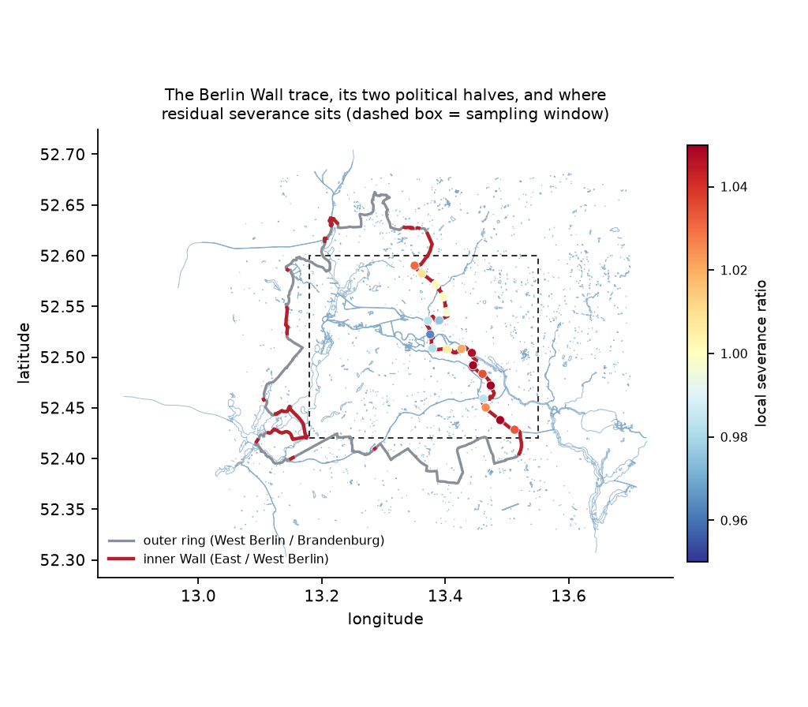
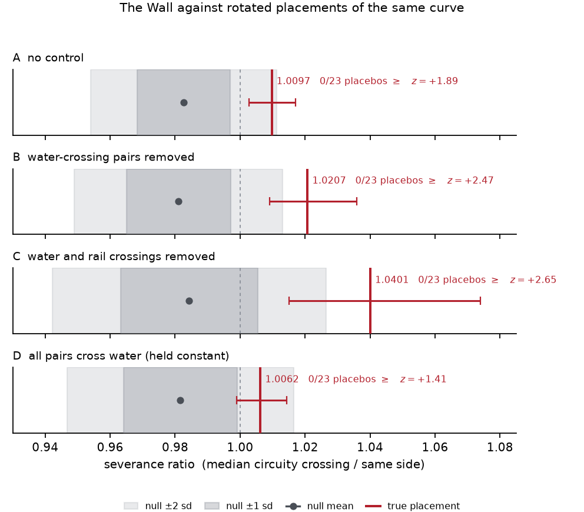

The river that carried a border
The Spree rises in the hills of Saxony and runs north-west through Berlin before joining the Havel and, eventually, the North Sea. For twenty-eight years, part of its course through the centre of Berlin was also the edge of a country. The Berlin Wall did not cut across the city at random. Where it could, it followed water: the Spree itself, the Landwehrkanal, the Britzer canal, and the rail corridors that had already been laid beside them.
This is not a Berlin peculiarity. Borders follow rivers everywhere, and for an obvious reason: a river is already difficult to cross, so it is cheap to defend and easy to agree on. That habit leaves a question that is harder than it first appears. When a border and a river lie on top of one another, and you measure the mark the border left on a city, what have you actually measured?
What a road network remembers
A city's road network keeps a record of what has been difficult to cross. The measure is called circuity: the distance you must actually travel between two points, divided by the straight-line distance between them. Travel across open ground and the ratio sits near one. Travel across a river with few bridges and it climbs, because you must go the long way round to reach a crossing.
This study builds Berlin's drivable road network from open mapping data -- 386,719 junctions -- and asks a simple question. If you pick two points between 1 and 6 km apart on opposite sides of where the Wall stood, do you travel further than two points the same distance apart, in the same neighbourhood, on the same side?
The problem with an obvious answer
You will find excess circuity across the Wall. But you will also find it across an arbitrary line drawn anywhere awkward. Laying the same curve across Hamburg, a city never divided, produces apparent severance of up to 1.58 -- purely from the Elbe and the port. A river severs a road network all by itself, with no politics involved at all.
So the test cannot be "is there extra circuity?" It has to be "is there more extra circuity here than at comparable places?" This study answers that by taking the Wall's exact shape -- all 158.2 km of it -- and rotating it about its own centre to 23 other positions in the same city. Each rotated copy has identical shape, length and enclosed area. Only the history is removed. The real position is then scored against those 23 imposters.

A boundary that is still shut
Before trusting a result at a boundary that is gone, you need to know the instrument works on one that is still there. In Nicosia, the United Nations Buffer Zone has divided Cyprus since 1974 and remains closed, crossed by only a handful of checkpoints.
Crossing it costs 49.9% additional travel distance. Not one of 20 displaced comparison lines comes close: the true position sits +12.35 standard deviations above them. The method detects a living boundary without difficulty, which is what makes the Berlin number interpretable.
Berlin, thirty-seven years on
Crossing the line where the Wall stood still costs about 1.0% more travel distance than moving the same distance alongside it -- and no rotated copy of the Wall, anywhere else in Berlin, matches it.
The effect is small. Set against Nicosia's 49.9%, a boundary still closed costs roughly 51 times more than one taken down a generation ago. Berlin has very largely healed. But not completely.
The river's twist
Here the rivers return, and not as expected. The obvious worry was that the Berlin result was really the Spree in disguise -- and 90.7% of trips crossing the former Wall do also cross water, with 99.0% crossing water or railway.
But removing every water crossing did not shrink the effect. It grew, from 1.0% to 4.0% once railways went too.
The reason is that Berlin is a watery city, so the comparison trips cross rivers as well -- 71.2% of them. A river shared by both groups is not a rival explanation for the difference between them. It is noise in both, and it was hiding the boundary rather than creating it. Where a river must be crossed anyway, the river dominates and the old border adds almost nothing. Where no river intervenes, the border's own mark is clearest.

Where the mark survives
The residue is not spread evenly along the line. It is largest in the south-east, where the Wall ran beside the Spree and the Britzer canal through Plänterwald (1.161) and Johannisthal-Süd (1.087). It is smallest, and actually negative, in the centre at Friedrich-Wilhelm-Stadt (0.963).
That map is a map of reconstruction money. Potsdamer Platz, the government quarter and the new central station were all built straight across the former line in the 1990s. The south-eastern stretch through Treptow and Johannisthal was not. Where Berlin rebuilt across the river, the border disappeared from the road network. Where it did not, a trace remains.
What follows the water
Rivers give cities their shape, and then politics borrows that shape and calls it a border. Long after the politics is dismantled, the river is still there, and so is the pattern of bridges it dictated.
The instrument built here is not specific to Berlin. It needs only a line, a road network, and a set of honest comparisons. It could be pointed at Belfast's peace lines, at the Green Line through Nicosia's suburbs, or at any of the rivers that became borders and are now merely rivers again. Two measurements hint at how quickly a boundary fades. A dozen would begin to tell us what makes some fade faster than others.